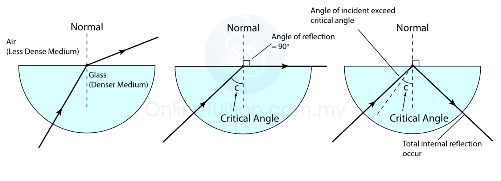
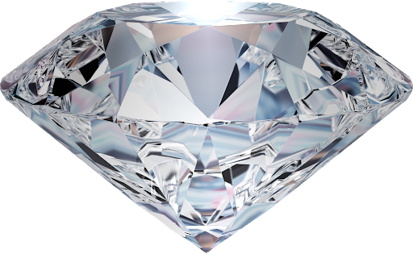
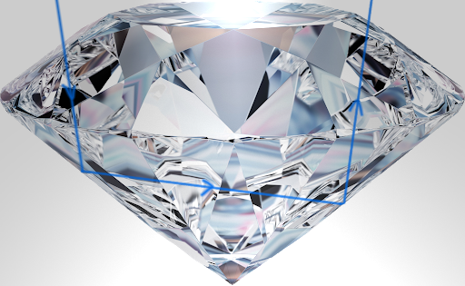

折射請確保你以閲讀折射的教學 |
引入 |
 從(a)可見，當光綫由玻璃傳播到空氣時會發生折射時，光綫會偏離法綫。 從(b)可見當光綫的入射角改變，折射角也會發生改變。 可是當折射角大於90°會發生什麽呢？ 科學家發現所有光綫將不會發生折射，會全部變爲反射，這就是物理學上的全内反射。 |
全内反射的應用 |
全内反射的應用非常廣，下面將會以鑽石作講解。  鑽石之所以非常閃耀是因爲光綫會直接反射到人們的眼睛裏。以下為光進入鑽石後的光綫圖  |
正是因爲這個原因，鑽石才可以閃閃發光， 而在沙漠中的海市蜃樓也是因爲全内反射形成，點擊這裏瞭解更多吧！ |